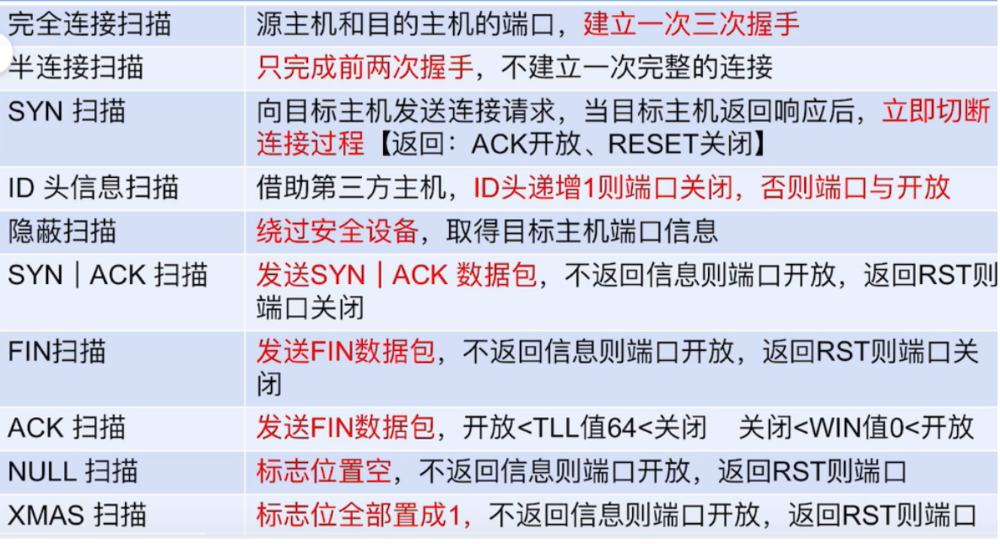
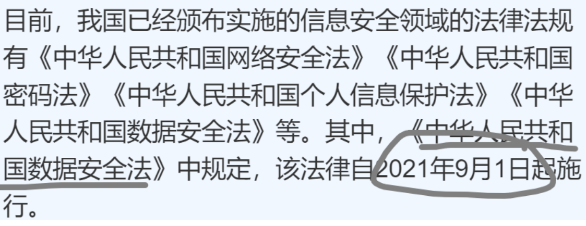
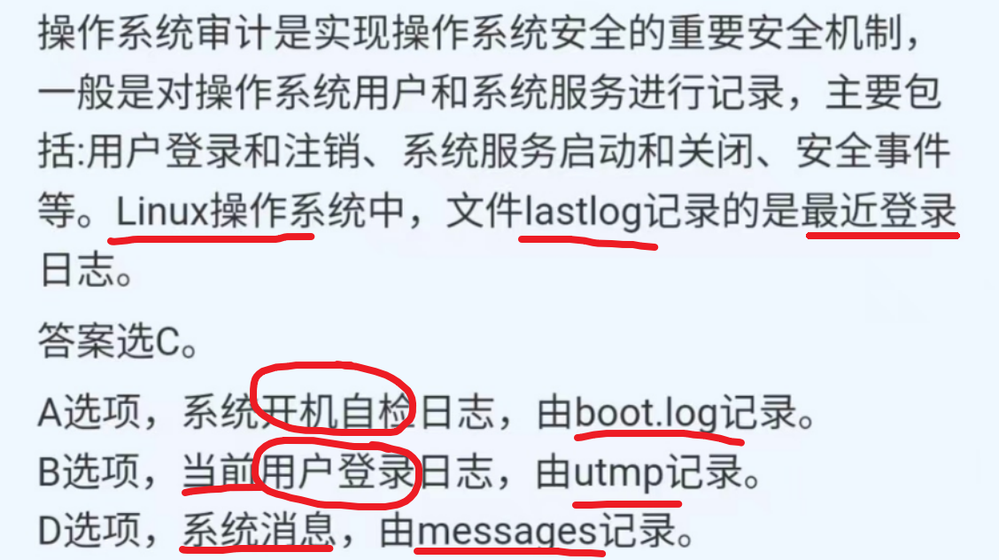

ISE
B站”杨冬信安”部分知识点整理
网络信息安全的基本属性
机密性：不泄露给非授权用户
完整性：未授权不能改
可用性：及时获取网络信息和服务
可控性：可管理、可支配
抗抵赖性：防止用户否认其活动行为
三要素：CIA ：机密性、可用性、完整性
网络信息安全的基本功能：
防御、检测、应急、恢复
国家密码分类：
绝密、机密、密码
密码分类：
普通密码、核心密码、商用密码
等保测评的流程：
定级、备案。建设整改、等级测评。运营维护（监督管理）
三级等保每年都测评
网络攻击的一般过程：
- 隐藏攻击源
- 收集攻击目标的信息
- 挖掘目标的漏洞信息
- 获取目标的访问权限
- 隐藏攻击行为
- 实施攻击
- 开辟后门
- 清除攻击痕迹
分为进入前和进入后
常见的端口扫描技术：

DDOS常用的攻击手段
HTTP FLood攻击、SYN Flood攻击、DNS放大攻击
国产密码算法：
密码分析攻击的五种类型：
常见密码算法：
对称：DES，AES，IDEA
DES算法中S盒：
非对称：RSA，ECC
BLP机密性模型：
简单安全特性：下读（下毒）
*特性：上写
信息保障模型：
软件安全能力成熟度模型：
机房功能区域组成：
自主访问控制：
Linux访问控制：
防火墙功能：
防火墙防御体系结构类型：
基于双宿主主机防火墙、基于代理型防火墙、基于屏蔽子网的防火墙。
VPN类型：
VPN实现技术：IPsec
VPN实现技术：SSL
入侵检测模型：
基于误用的入侵检测技术：
利用系统和软件的漏洞技术进行攻击
基于异常的入侵检测技术：
网络入侵检测系统Snort
网络物理隔离系统与类型：
网络安全审计系统：
网络安全漏洞威胁：
刷题知识点整理
法律法规

水印：
漏洞利用类蠕虫

远程控制木马：
CA和RA功能：
RA：注册机构，认证注册信息的合法性、批准证书的申请和批准撤销证书的申请
CA：证书机构，签发证书，证书废止和更新
后缀：
恶意代码类型前缀：
操作系统的安全机制：
安全审计机制、可信路径机制、标识与鉴别机制、客体重用机制、访问控制机制
Android平台数据存储方式：
文件存储数据
网络存储数据
使用SharedPreferences存储
当你使用手机上的某个应用程序时，你可能会选择一些设置，比如主题颜色、字体大小、登录状态等。这些选择是应用程序使用
SharedPreferences存储起来的。它是一个小抽屉，可以帮助应用程序保存你的个性化设置，以便你下次使用应用时可以保持你之前的选择。SQLite数据库存储
使用ContentProvider存储
在Android应用程序中，ContentProvider 提供了一种数据共享的机制。它允许一个应用程序（或组件）共享它的数据给其他应用程序使用，而不需要暴露数据的具体存储方式。其他应用程序可以通过 ContentProvider 查询、插入、更新和删除数据，就像向图书管理员借书一样。这种机制确保了数据的安全性和隐私性，同时也方便了不同应用程序之间的数据交换。
网卡接收数据帧状态：
衡量密码体制安全性的基本准则：
恶意代码：
病毒：能够自我复制和传播，通常无法远程控制
蠕虫：不断自我复制导致电脑变慢，可以远程控制
特洛伊木马：具备很好的隐藏能力，悄悄的窃取用户信息
Android:
Android系统是一个开源的移动终端操作系统，分为：
Linux内核层、系统运行库层、应用程序框架层、应用程序层
系统安全机制：
应用程序权限信息声明在：AndroidMainifest.xml
Android 开发主要组件：
Activities（活动）、Broadcast Receivers（广播接收器）、Services（服务）、Content Providers（内容提供者）
域名：
域名”www.humen.com"在DNS查询包中的表示形式为
037777770568756d656e03636f6d00
解释：
- 03表示接下来的标签长度为3个字节。
- 777777表示”www”，每个字母对应一个ASCII码。
- 05表示接下来的标签长度为5个字节。
- 68756d656e表示”humen”，每个字母对应一个ASCII码。
- 03表示接下来的标签长度为3个字节。
- 636f6d表示”com”，每个字母对应一个ASCII码。
- 00表示域名的结束。
防火墙：
防火墙是层层过滤的，实际是按照配置规则的顺序从上到下，从前到后进行过滤的。
如果匹配成功规则，即明确表示是拒绝(DROP)还是接收(ACCEPT)，数据包就不再向下匹配新的规则。
如果规则中没有明确表明是阻止还是通过的，也就是没有匹配规则，向下进行匹配，直到匹配默认规则得到明确的阻止还是通过。
防火墙的默认规则是所有规则都匹配完才会匹配的。
对于表的顺序是：
raw–>mangle–>nat–>filter
数据包进来还是先PREROUTING链，然后按照上面的那个表的顺序匹配规则。就如下图所示，会先进行raw表里的PREROUTING链匹配，然后mangle、nat表。
基本语法：
1 | iptables [-t 表名] 管理选项 [链名] [匹配条件] [-j 控制类型] |
| 选项 | 说明 |
|---|---|
| -A | 在指定链末尾追加一条 |
| -P | 指定默认规则 |
| -D | 删除 |
| -L | 查看 |
| -n | 查看时显示更详细信息，常跟-L一起使用 |
| -t | 指定表，不指定默认是filter |
| -i | insert拒绝类规则放在所有规则最上面 |
| 指定匹配 | 说明 |
|---|---|
| -p | 指定要匹配的协议类型，如TCP,UDP |
| -s | 指定源IP地址或地址范围 |
| -d | 指定目标IP或地址范围 |
| -sport | 指定源端口号 |
| -dport | 指定目标端口号 |
| -j | 满足条件之后执行的动作 |
| 动作 | 说明 |
|---|---|
| ACCEPT | 允许数据包通过 |
| DROP | 丢弃数据包，不给出回应 |
| REJECT | 拒绝数据包通过，会返回一个响应信息 |

白名单安全机制和黑名单安全机制：默认允许的就是黑名单安全机制
四表五链+规则：
表：相同功能的集合
设备安全：
网络设备之间的远程运维采用的安全通信方式：SSH,VPN
Ubuntu系统中的日志文件都位于/var/log目录，其中的登录认证日志都在auth.log文件中
Ubuntu系统的配置基本在/etc目录下，
“>”：是改写原有文件的内容
“>>”：在原有文件内容的后面进行追加
Linux系统服务管理程序是systemctl，其语法就是命令+动作+服务命令：systemctl restart ssh
命令历史记录都在每个用户home目录下的.bash_history文件中，home目录可以用~表示，组合就是：
rm ~/.bash_history
Windows系统
查看系统端口开放情况：netstat
Linux系统

查看系统端口开放情况：netstat
端口号
- 80/TCP： HTTP通信（用于常规的网页浏览）
- 443/TCP： HTTPS通信（加密的网页浏览）
- 21/TCP： FTP控制端口（用于文件传输协议）
- 22/TCP： SSH（用于安全的远程命令行访问）
- 23/TCP： Telnet（用于远程命令行访问，不安全，不推荐使用）
数据库系统安全
国外主流的数据库系统有 MS SQL、MySQL、Oracle、DB2 等
数据库脱敏是指利用数据脱敏技术将数据库中的数据进行变换处理，在保待数据按需使用 目标的同时，又能避免敏感数据外泄
Snort规则
Snort 是一个开源入侵防御系统（IPS）。Snort IPS 使用一系列规则来帮助定义恶意网络活动，并利用这些规则来查找与之匹配的数据包，并为用户生成警报。
1 | alert tcp any any -> 192.168.1.0/24 111(content:"|00 01 86 a5|";msg:"mountd access";) |
snort 每条规则都可以分成逻辑上的两个部分：规则头（header）和规则选项（General Option）
从开头到括号前属于规则头部分，括号内的部分属于规则选项。规则选项中冒号前面的词叫做选项关键词(option keywords)。如果许多选项组合在一起，它们之间是逻辑与的关系
规则头：
规则行为
Alert
Log
Pass
协议
tcp udp icmp
IP地址
端口
方向操作符
方向操作符->表示数据包的流向。它左边是数据包的源地址和源端口，右边是目的地址和端口。
规则选项: